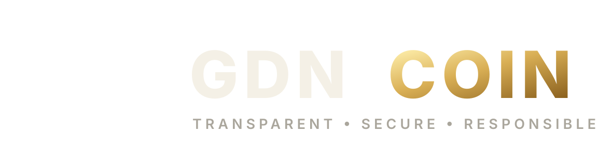

ETHEREUM ERC-20 • SEPOLIA VERIFIED
Transparent finance.
Real utility.
Social impact.
Building a secure, transparent and community-driven blockchain ecosystem focused on practical utility, responsible innovation and long-term value.
Sepolia Contract
0xe898363d5e8d9d60eca40a468956bdd3b52f4fa6GDN
✓
Contract StatusVerified on Sepolia
ABOUT GDN
Built on clarity, not complexity.
GDN Coin was created around a simple principle: blockchain technology should be transparent, useful and capable of supporting measurable positive impact.
The complete supply was created once at deployment. No public minting function exists, no transfer tax is applied and the initial allocation is publicly verifiable on-chain.
MISSION
Build an open, secure and transparent blockchain ecosystem.
VISION
Support practical utility with measurable social impact.
CORE PRINCIPLES
The standards behind every decision.
Transparency
Clear communication, verifiable data and open development.
Security
Responsible design, proven libraries and careful ownership controls.
Real Utility
Features should solve real problems and serve a clear purpose.
Community
Long-term progress is built through participation and collaboration.
Sustainability
Responsible growth matters more than short-term attention.
Innovation
Continuous improvement guided by technology and constructive feedback.
TOKENOMICS
A predictable fixed-supply model.
Simple allocation. No hidden deductions. No inflationary minting.
1BGDN
Treasury950M GDN
Charity Reserve50M GDN
Fixed Supply
The total supply is permanently capped at 1,000,000,000 GDN.
No Transfer Tax
Sending 100 GDN delivers exactly 100 GDN to the receiver.
Burnable
Holders may voluntarily and permanently burn their own tokens.
Emergency Pause
Transfers can be paused by the owner during exceptional incidents.
SMART CONTRACT
Conservative architecture. Publicly verifiable.
Standard Token Core
ERC20Burnable
ERC20Pausable
Ownable2Step
No Public Mint
OpenZeppelin
Current status:The verified deployment is on Ethereum Sepolia testnet. Mainnet launch has not occurred.
ROADMAP
From verified testnet to a responsible ecosystem.
Foundation
Smart contract, GitHub repository, Sepolia deployment, verification and wallet testing.
Brand & Community
Official visual identity, Website v4, whitepaper development and early community foundations.
Mainnet Preparation
Security review, multisig transition, liquidity planning and launch readiness.
Ecosystem Growth
Payments, business partnerships and transparent social-impact initiatives.
OFFICIAL IDENTITY
One symbol. One consistent system.
The geometric G and integrated circuit nodes unite value, technology and transparency in a single recognizable mark.
Primary MarkDigital, wallet and social use

Horizontal LockupWebsite, documents and partnerships
OFFICIAL RESOURCES
Verify everything. Follow the build.
Official source code, contract verification and project documentation are available through the links below.
GDNWHITEPAPERv1.0 BETA
MORE THAN A TOKEN. A MOVEMENT.
Designed for trust. Built for the future.
Important notice
GDN Coin is currently in public testnet development. Roadmap items are plans, not guarantees. Digital assets involve technical, market and regulatory risk. Always conduct independent research.